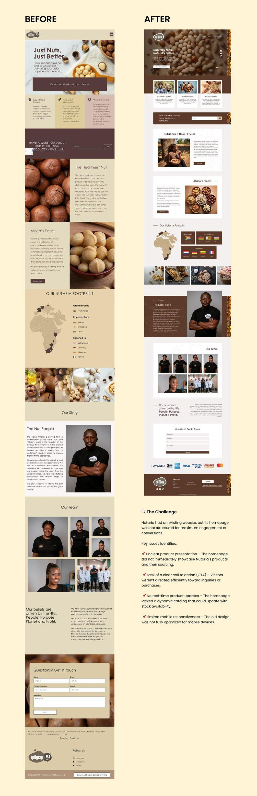
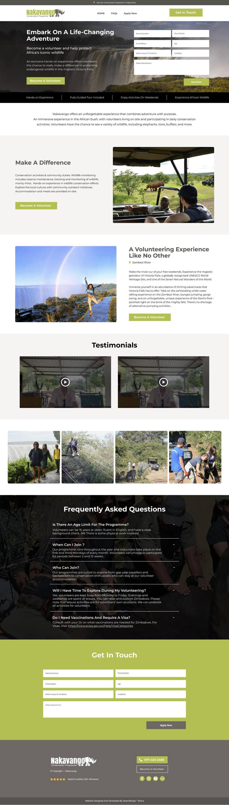
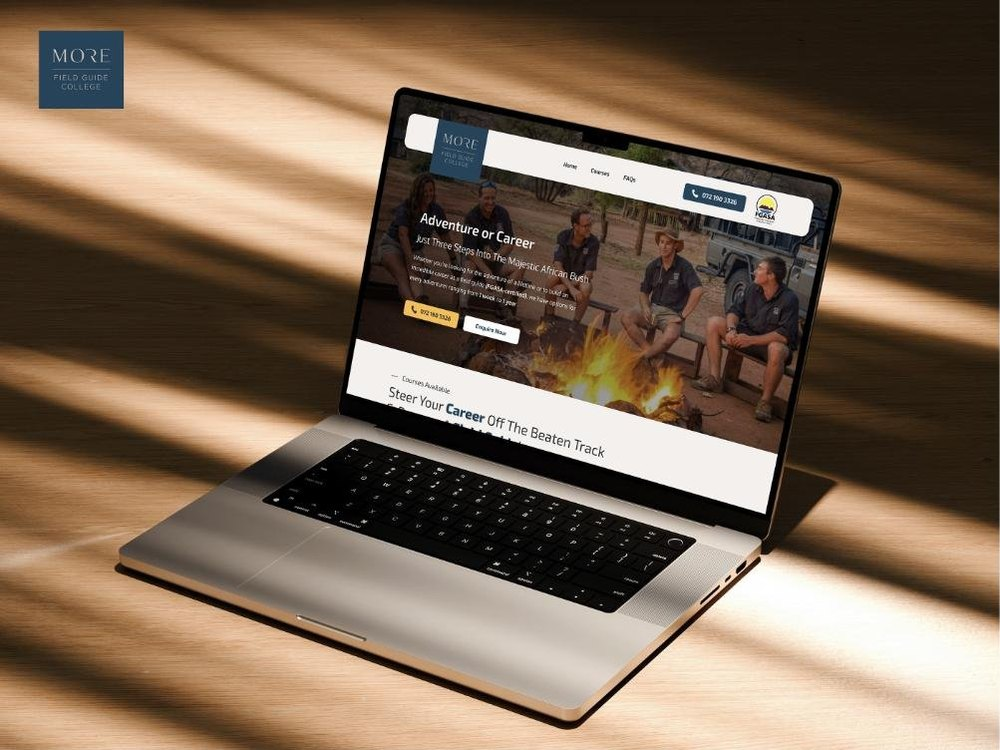
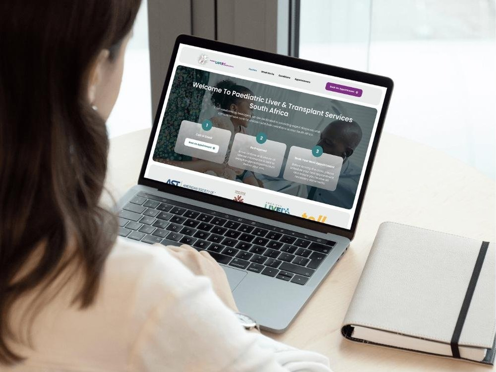
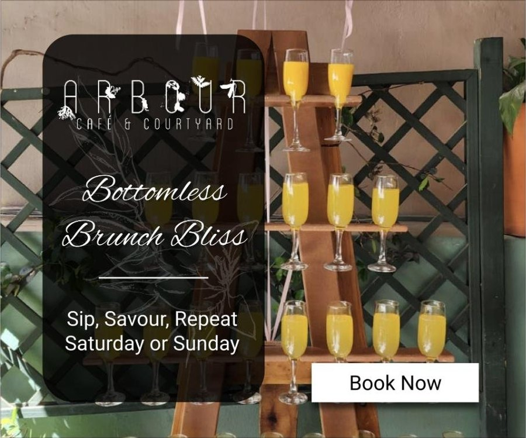
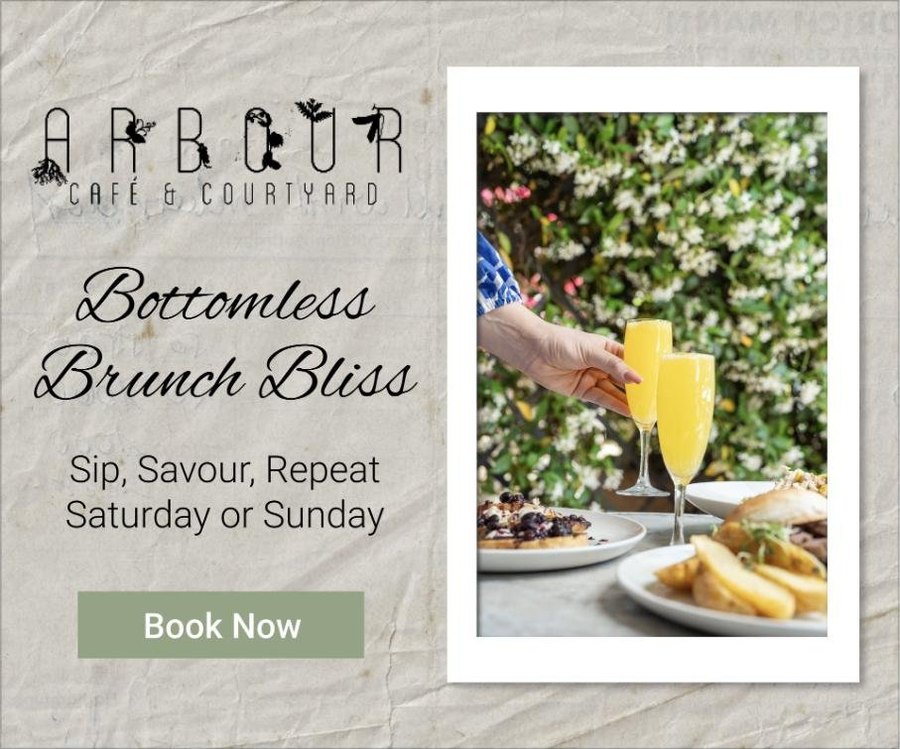

Where the craft came from
Landing pages, homepages and campaign creative built at SearchKings Africa, a Google Ads and lead generation agency, between 2022 and 2025. Every page here existed to convert paid traffic, which is a brutal and useful way to learn, because somebody is paying for each visitor who bounces off it.
I am showing these at lower weight than the client case studies deliberately. They are older, they are craft rather than systems, and I did not have the measurement apparatus then that I have now. What they do show is that the conversion thinking arrived before the analytics did.
Nutaria, a homepage transformation
Nutaria export premium African macadamia nuts and legumes, wholesale and direct to customer, into the Netherlands, Germany, Lithuania and France. The product was good. The homepage was not structured for engagement or conversion, and this is the project where I first wrote the problem down as a list of diagnosed issues before designing anything.
The four I identified at the time, in my own words then: the homepage did not immediately showcase the products or where they were sourced from; there was no clear call to action, so visitors were not directed toward an enquiry or a purchase; there was no dynamic catalogue that could reflect stock availability; and the old design was not properly responsive on mobile.
Why this one is here
That list is a conversion audit. It is thinner than the ones I write now, it has no data behind it and no baseline to measure against, but the instinct is the same one that produced the Ruleguard and Dayshape work: find out what the page is failing to do before deciding what it should look like.

Nakavango Conservation Programme
A volunteer recruitment page for a conservation programme based near Victoria Falls in Zimbabwe. The audience is gap year travellers and conservation enthusiasts deciding whether to commit several weeks and a plane ticket, which makes it a high consideration, high anxiety decision dressed up as a holiday.
Three things on this page I would still do the same way today. The application form sits in the hero rather than behind a click, because the visitor arriving from an ad is already qualified. A four item trust strip sits directly beneath it. And the FAQ answers the questions that actually stop this audience, age limits, when programmes run, who can join, whether there is free time, vaccinations and visas, rather than the questions the client wanted to answer.
That is objection handling at the point of hesitation. I did not have a name for it in 2025. It is the same argument I made to Ruleguard, with a strategy document and behavioural data behind it, a year later.

MORE Field Guide College
A landing page for a field guide training college, aimed at people choosing between an adventure and a career change. The header carries the FGASA accreditation badge and a phone number beside the enquiry button, because for a course costing real money the credential and the ability to speak to a human are the two things that unblock a decision.
This is also the project where I wrote down why each colour was chosen rather than just choosing it. Earthy brown for the landscape, deep blue for credibility, warm yellow for the adventure, and a neutral white to keep long course descriptions readable. Reasoning about palette in terms of what it has to do, rather than what it looks like, is a habit I still have.

Paediatric Liver and Transplant Services South Africa
A specialist paediatric service that had no website at all. Parents needed to find the conditions treated, the doctors treating them, and how to get an appointment, usually while frightened and usually on a phone.
The design answers that with three numbered steps in the hero: get a referral, be prepared, book your next appointment. Wayfinding rather than marketing. When somebody is dealing with their child's liver condition, the job of the page is to remove uncertainty about what happens next, and the accreditation logos underneath are doing more work than any headline could.

What I would do differently
I would test the three step pattern with actual parents rather than reasoning my way to it. It is the right structure as far as I can tell, but this is the project on the page where being wrong would matter most, and I had no way of knowing at the time whether I was.
Arbour Cafe and Courtyard
Google Ads banners for a boutique cafe in a leafy courtyard, promoting their Bottomless Brunch Bliss service. The brief was to carry an elegant, nature led brand identity into a format that gives you a few centimetres and about one second, and still get a booking out of it.
Two directions, the same offer. The dark treatment sets the type over the photograph for atmosphere. The light treatment separates them so the offer reads first. Both keep the script logotype, the same three line message and a single Book Now.


What this period actually taught me
- Paid traffic is an unforgiving teacher. When somebody is paying for every visitor, a page that does not convert is not a design opinion, it is a cost.
- The objection is the content. Age limits, visas, accreditation, referral routes, stock availability. Every page here works because it answers the specific thing that stops its specific audience.
- Reasoning beats taste, and writing the reasoning down beats both. The palette rationale on the field guide college and the problem list on Nutaria are early versions of the audit documents I write now.
- What was missing was measurement. None of these have a baseline, a test, or a validated outcome, because I did not own the analytics then. That gap is exactly what the client work on this site is about closing.